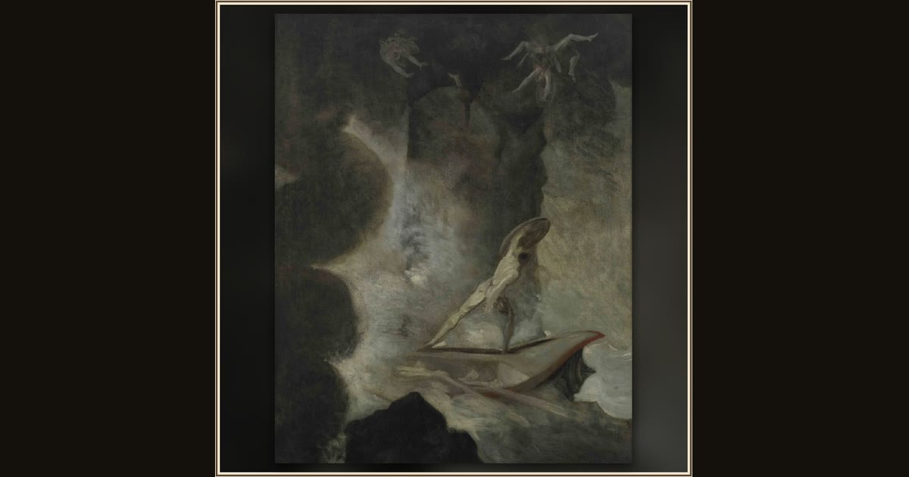

Odysseus between Scylla and Charybdis
Johann Heinrich Füssli · 1794–1796 · Aargauer Kunsthaus · Aarau, Switzerland
Odysseus stands at the center with his shield raised toward Scylla, shown as a towering rock whose three heads devour six companions. Charybdis churns in the lower-right corner (depicts Od. 12.234–244). Explore its place in Book XII of the Odyssey.